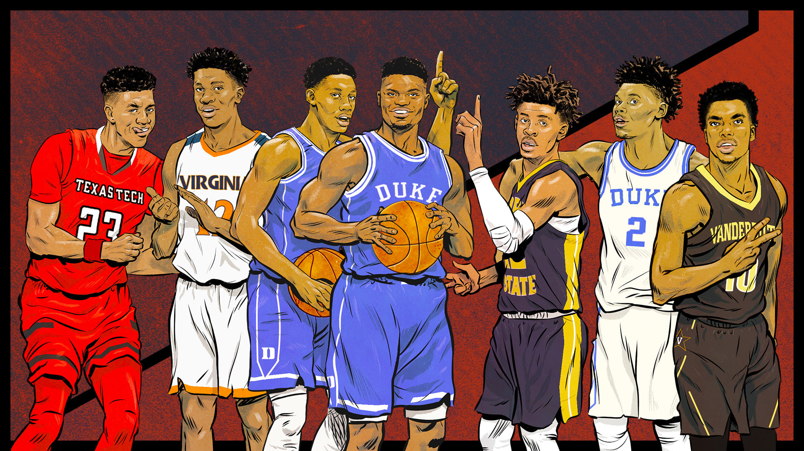
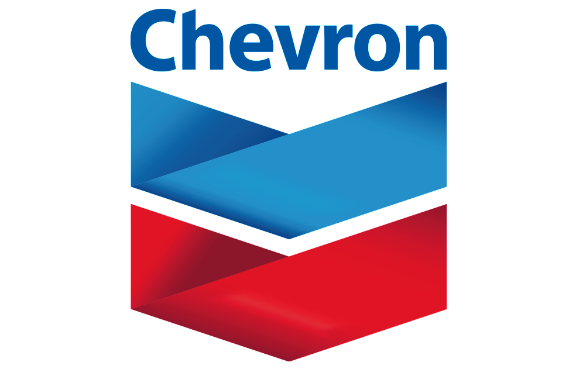

For the 2021 UCSD DataHacks challenge, my group and I competed in the Economics track. This challenge focuses on prosperity and
growth of a given set of countries between the years 2007 and 2016 with regard to various factors like education, governance, etc.
Our group used the EvalML library (a subset of AutoML) to optimize our machine learning pipelines for this task. We coupled our ML work
with different interactive data visualizations to provide a growth report for countries of interest. My team won 2nd place in our category.
In this article, I led a team of three other students to investigate vaccine rollout across the nation. By investigating vaccine success state-by-state,
we aimed to explain the disparity across the country. I used Facebook's Prophet library to look at different milestones concerning vacccination success,
including President Biden's 100-day plan. On top of the analysis of vaccine rollout, I also used NLP to interpret the twitter sentiment surrounding different
COVID-19 vaccines, international politicians, and other global entities.

As part of The Data Science Union at UCLA, my team and I worked on creating a salary predictor for NBA players. Using attributes like
a player's position, age, turnover rate, and games played we sought to find out how much a player might make in their next season of play.
After using linear/polynomial regression, support vector machines, and random forest, we landed on using the gradient boosted framework, XGBoost.
I developed a web application for my team, and built our final model by splitting data into Rookie/Veteran groups and running gradient
algorithms on different subgroups.
Using Python, R, HTML, and Tableau

Every year, thousands of hot dogs go to waste across Texas due to miscalculation of demand. We sought to help Chevron prevent this by extracting
insights into consumer behavior and creating a model that can accurately forecast sales. To do this, we utilized machine learning to create a
cook plan for certain buckets of time, saving Chevron money. We acheived a root mean squared error (RMSE) of 3.55 against new data (the lowest RMSE across 30 teams).
This project was completed as part of the 2021 Rice Datathon and my group won 1st place in our category.

This web application was created as part of the UC Berkeley Data Science Society Datathon for Social Good. I look at the likelihood a person
encounters a COVID-19 positive person based on their area of residence and the number of likely interactions they have on any given day. Other than this metric
I also look at the number of active cases (Total Cases - Total Recovered - Total Deaths) based on a user-specified number of days. Further visualizations
include a dynamic choropleth of the average rate of change of COVID-19 cases as well as a novel clustering analysis of each county in the United States.
I won 1st place overall.

As project lead, I led a group of five others to create a comprehensive article for DataRes at UCLA. This article looks at California wildfire growth over the last decade, and the role climate change has played in exacerbating the current wildfire crisis.
My team and I employed a variety of geospatial python libraries in order to best capture the existing patterns and characteristic attributes of California wildfires. All visualizations were created from scratch using CAL FIRE data and APIs.

This web application was made with my friends as part of the Texas A&M University 2020 Datathon.
Our final product was a heroku web application to gauge the best city for a user based on specified metrics and sklearn's davies_bouldin_score attribute.
After gauging the optimal cities for a user, we visualized these locations using geospatial mapping libraries. In order to capture what these locations look like we web-scraped multiple images for over 300 cities in order to display the beauty of a user's ideal city.
We won 3rd place in our category.

In this project my team built a virtual assistant to convey COVID-19 information audibly and over SMS.
We noticed a gap in catering for those with visual impairments and addressed this issue with the tremendous capabilities of speech recognition.
We essentially created a virtual assistant that can perform a variety of tasks. These tasks range from answering questions about the virus using an AI-powered chatbot, to enabling quick-and-easy
dissemination of real-time COVID-19 county-specific updates.

The aim of this datathon was to gather eCommerce insights and leverage analytics to diagnose business strengths in terms of customer behaviors.
My team was charged with analyzing visualizations that projected customer lifetime value (LTV) over 5 year and 10 year periods.
By analyzing specific quantiles of our subset, we came to the conclusion that our client (the eCommerce company in question) should target higher spenders and
incentivize to those customers who fall in the top 60% of high-spenders. We won 2nd place overall.

In an effort to better understand how powerful search engines such as Google function, I built the skeleton of the PageRank algorithm from scratch.
Having created this algorithm I used it to recognize important characters in the famous Broadway Play, Hamilton, as well as the most frequented
airports across the globe. PageRank expresses an intuitive idea: important pages are linked to other important pages. As such, I look at how often a
character is mentioned by another character in Hamilton and how often a specific airport is visited in the context of departures/arrivals.